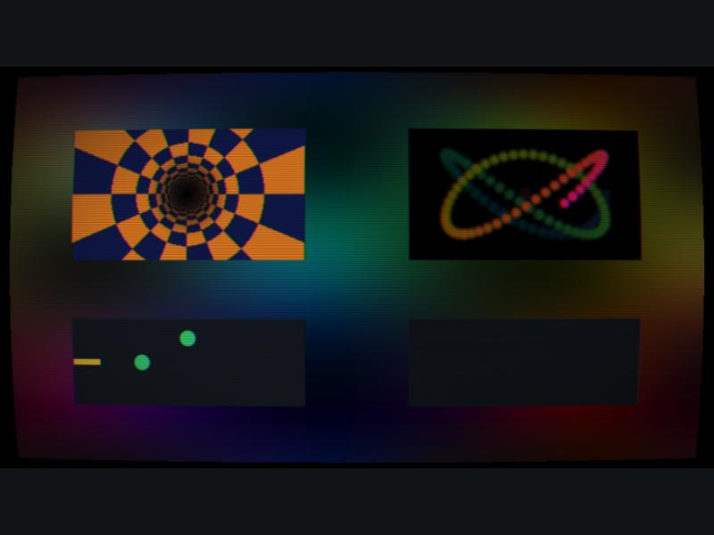
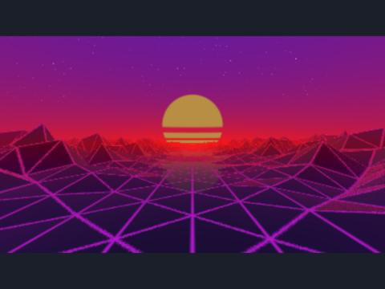
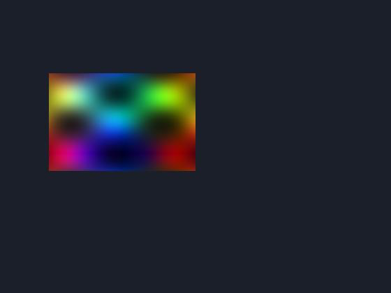
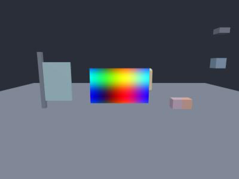
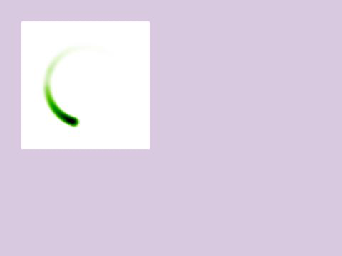

56 · Shadertoy: use any shader from shadertoy.com
Goal: run shaders written for shadertoy.com in a Nord game, change them from scripts, and use them as backgrounds, effects and 3D surfaces.
Is it the same language? Yes. Shadertoy shaders are GLSL ES 3.00 fragment shaders with one function, mainImage. Nord compiles exactly that function, adds the inputs Shadertoy gives you (iTime, iResolution, iMouse, iChannel0 …), and draws the result. You paste the code; nothing is rewritten.

The picture above is examples/shadertoy-lab: a full-screen plasma background, a tunnel, a Buffer-A paint shader (mouse), a keyboard shader and an audio spectrum, all with the CRT post effect (C toggles it).
Before you start#
Open the project examples/shadertoy-lab (New project ▸ Open, or nord serve examples/shadertoy-lab). Press Play: you see the picture above. Everything on this page is in that project, in assets/shaders/.
A real shader works too. This is the synthwave landscape from examples/shader-terrain running unchanged in a scene:

1 Your first shader#
- Create the file
assets/shaders/plasma.glsl(in your file manager or any editor) with the text below, or copy one from the Lab. It appears in Assets after a moment. - Hierarchy ▸ + Create ▸ Empty, name it
Plasma. - Inspector ▸ + Add component ▸ shadertoy. Set
filetoassets/shaders/plasma.glsl(the field has an asset picker) andsizeto320, 180. - Press Play. A 320 by 180 picture of moving colour sits where the entity is.
File: assets/shaders/plasma.glsl (new file, the whole file)
void mainImage( out vec4 fragColor, in vec2 fragCoord )
{
vec2 uv = fragCoord / iResolution.xy;
vec3 col = 0.5 + 0.5 * cos(iTime + uv.xyx * 6.0 + vec3(0, 2, 4));
col *= 0.6 + 0.4 * sin(10.0 * uv.x + iTime) * sin(10.0 * uv.y - iTime);
fragColor = vec4(col, 1.0);
}In the file scenes/main.scene.json, the entity now contains:
{ "type": "shadertoy", "file": "assets/shaders/plasma.glsl", "size": [320, 180] }
You can also put the text in the component with code instead of file (handy for tiny shaders).
The component fields#
| Field | Type | Default | Meaning |
|---|---|---|---|
file |
asset (.glsl) |
The shader text. Tabs are cut at marker lines (see "Several tabs"). | |
code |
string | The shader text itself, used when file is empty. |
|
size |
vec2 | [256, 256] |
Size of the picture in world units (2D pixels, 3D metres). |
resolution |
vec2 | [512, 512] |
3D only: the pixel size the shader renders at. |
resolutionScale |
number | 1 |
Render at a fraction of the size (0.5 = a quarter of the work). The picture is scaled up. |
speed |
number | 1 |
Time runs this fast. 0 freezes iTime. |
paused |
bool | false | Stop drawing (the last picture stays). |
transparent |
bool | false | Use the shader's alpha (fragColor.a) instead of forcing 1. |
fullscreen |
bool | false | 2D: cover the whole view, fixed to the camera. depth picks what it is behind. |
target |
plane / material |
plane |
3D: a plane in the scene, or the material of this entity's own mesh. |
billboard |
bool | false | 3D plane always faces the camera. |
channels |
array | The four inputs, see below. | |
buffers |
object | Buffer A–D as separate entries (alternative to markers in the file). | |
uniforms |
object | Values for uniform variables the shader declares itself. |
2 A background behind everything#
Inspector ▸ + Add component ▸ shadertoy on a new empty object, then tick fullscreen and give it a low depth (everything with a bigger depth is drawn in front).
In the file (an entity in scenes/main.scene.json):
{ "name": "Background", "transform": { "pos": [480, 270, -100] },
"components": [ { "type": "shadertoy", "file": "assets/shaders/plasma.glsl", "fullscreen": true, "resolutionScale": 0.5, "depth": -1000 } ] }The picture follows the camera, so it does not scroll with the level. resolutionScale: 0.5 is a good habit for backgrounds: they are big and usually soft anyway.
3 The inputs Shadertoy gives you#
All of these exist in every pass:
| Name | Type | What it is |
|---|---|---|
iResolution |
vec3 | Render size in pixels (z = 1). |
iTime / iTimeDelta |
float | Seconds since start (× speed) / seconds of the last frame. |
iFrame / iFrameRate |
int / float | Frame counter / frames per second. |
iMouse |
vec4 | xy = pointer while the button is down, zw = where it was pressed (z > 0 while held, negative after release). Pixels, origin bottom-left, like Shadertoy. |
iDate |
vec4 | Year, month (0–11), day, seconds since midnight. |
iChannel0 … iChannel3 |
sampler | Your four inputs. |
iChannelResolution[4] / iChannelTime[4] |
vec3 / float | Size and time of each input. |
iSampleRate |
float | 44100. |
The mouse works on 2D pictures too: the pointer is converted into the picture, so a shader in a small window reacts only when the pointer is over it.
4 Channels (iChannel0 – iChannel3)#
In the Inspector the component's channels field is a list (+ adds an entry) of up to four inputs; use null to skip one.
type |
Settings | iChannel gives you |
|---|---|---|
texture |
src (a project image), filter linear / nearest / mipmap, wrap repeat / clamp / mirror, vflip (default true) |
An image, upside down like on Shadertoy (so the same shader code works). |
buffer |
id: A, B, C or D |
The picture a Buffer pass drew (see "Several tabs"). Its own id gives you its previous frame. |
keyboard |
A 256 × 3 texture: row 0 key down, row 1 pressed this frame, row 2 toggled (index = JavaScript key code: Left 37, Up 38, Right 39, Down 40, Space 32). | |
audio |
A 512 × 2 texture: row 0 spectrum, row 1 waveform of the game's master mix. Start audio first (a click), as for all web audio. | |
cubemap |
src: six image paths (+x −x +y −y +z −z) |
A cube texture (declare samplerCube-style lookups with texture(iChannel0, dir)). |
screen |
The game picture drawn so far: the way to build post effects (see section 8). |
In the file (an entity using a texture and the keyboard):
{ "type": "shadertoy", "file": "assets/shaders/keys.glsl", "size": [320, 120],
"channels": [ { "type": "keyboard" } ] }File: assets/shaders/keys.glsl (new file, the whole file; the Lab has the full version)
const int KEY_SPACE = 32;
float toggle(int code) { return texelFetch(iChannel0, ivec2(code, 2), 0).x; } // flips on every press
void mainImage( out vec4 fragColor, in vec2 fragCoord )
{
vec2 uv = fragCoord / iResolution.xy;
vec3 col = vec3(0.08, 0.1, 0.14) + vec3(0.9, 0.7, 0.1) * toggle(KEY_SPACE) * step(uv.x, 0.12);
fragColor = vec4(col, 1.0);
}Press Space in the Game view: the bar on the left lights up and stays until you press Space again.
5 Several tabs (Common, Buffer A–D, Image)#
On Shadertoy a shader can have tabs. In a .glsl file you separate them with marker lines. After the tab name you can describe the channels of that tab with | pieces.
File: assets/shaders/paint.glsl (new file, the whole file)
// ===== Buffer A | iChannel0: buffer A =====
// Paint with the mouse: Buffer A keeps its own previous frame (iChannel0 = Buffer A) and fades it a little.
void mainImage( out vec4 fragColor, in vec2 fragCoord )
{
vec4 old = texture(iChannel0, fragCoord / iResolution.xy);
float d = length(fragCoord - iMouse.xy);
vec3 ink = 0.5 + 0.5 * cos(iTime * 2.0 + vec3(0, 2, 4));
float stroke = iMouse.z > 0.0 ? smoothstep(10.0, 0.0, d) : 0.0;
fragColor = vec4(mix(old.rgb * 0.992, ink, stroke), 1.0);
}
// ===== Image | iChannel0: buffer A =====
void mainImage( out vec4 fragColor, in vec2 fragCoord )
{
fragColor = vec4(texture(iChannel0, fragCoord / iResolution.xy).rgb, 1.0);
}Add a shadertoy component with file: assets/shaders/paint.glsl and no channels (they come from the markers). Press Play and drag the mouse over the picture: it paints a fading rainbow line.
Marker syntax: // ===== Common =====, // ===== Buffer A | iChannel0: buffer A | iChannel1: texture assets/noise.png nearest clamp =====, // ===== Image | iChannel0: buffer A =====. Channel words are buffer A, keyboard, audio, screen, texture <path> (+ nearest, mipmap, clamp, mirror), cubemap <six paths>. The Common tab is added in front of every pass. Passes run in the order A, B, C, D, Image, and a pass that reads an earlier buffer sees this frame's result.
Trap: Buffers need floating-point textures to keep values above 1 or below 0. The browser decides (
EXT_color_buffer_float); on very old GPUs the buffers fall back to 8 bits and simulations that store velocities will look wrong.
6 Change a shader from a script#
Shaders can declare their own uniform variables. Set them from code with the Unity-style wrapper ShadertoyComponent or the raw renderer.
File: scripts/Warp.js (new file, the whole file)
import { MonoBehaviour, ShadertoyComponent, Color } from 'nord';
export default class Warp extends MonoBehaviour {
async Start() {
const st = this.GetComponent(ShadertoyComponent);
await st.ready; // the shader compiles after the scene starts
st.speed = 2; // time runs twice as fast
st.SetFloat('uStrength', 0.7); // uniform float uStrength;
st.SetColor('uTint', Color.cyan); // uniform vec4 uTint;
}
Update() {
const st = this.GetComponent(ShadertoyComponent);
st.SetFloat('uPulse', 0.5 + 0.5 * Math.sin(this.time.elapsed * 3)); // a different value every frame
}
}| Member | What it does |
|---|---|
ready |
Promise: resolves when the shader has compiled (rejects with the GLSL error). |
speed, paused, time, frame |
Playback controls and read-outs. |
SetFloat/SetInt(name, v), SetVector(name, v), SetColor(name, c) |
Uniforms the shader declares. A name the shader does not declare is ignored. |
Restart() |
Back to frame 0 and clear all buffers. |
renderer |
The Shadertoy object (renderer.canvas, renderer.setUniform, renderer.passes) for anything else. |
A compile error is reported like a script error: the red overlay shows Shadertoy Image: ERROR: 0:12: … with the line number inside your shader text.
7 In 3D#
In a 3D project the same component draws on a plane or on your own mesh: Inspector ▸ + Add component ▸ shadertoy on an empty object, set size and resolution.
In the file (an entity in a 3D scene):
{ "name": "Screen", "transform": { "pos": [0, 3, -3] },
"components": [ { "type": "shadertoy", "file": "assets/shaders/plasma.glsl", "size": [5, 3], "resolution": [512, 320] } ] }
size is the plane in metres, resolution the pixels the shader renders. With "target": "material" the shader becomes the emissive picture of the entity's own mesh + material (a TV, a lava floor). With "billboard": true the plane turns towards the camera.
8 A post effect over the whole game#
game.effects (the effect stack of scene settings, see Console for errors it reports) has a shadertoy effect. The shader gets the finished game picture as iChannel0 and its output replaces it.
File: assets/shaders/crt.glsl (new file, the whole file)
void mainImage( out vec4 fragColor, in vec2 fragCoord )
{
vec2 uv = fragCoord / iResolution.xy;
vec2 d = uv - 0.5;
uv = 0.5 + d * (1.0 + 0.12 * dot(d, d)); // barrel curve
float split = 0.0015 + 0.001 * sin(iTime * 2.0);
vec3 col = vec3(texture(iChannel0, uv + vec2(split, 0)).r, texture(iChannel0, uv).g, texture(iChannel0, uv - vec2(split, 0)).b);
col *= 0.85 + 0.15 * sin(uv.y * iResolution.y * 3.14159); // scan lines
col *= smoothstep(0.9, 0.3, length(d)); // vignette
if (uv.x < 0.0 || uv.x > 1.0 || uv.y < 0.0 || uv.y > 1.0) col = vec3(0.0);
fragColor = vec4(col, 1.0);
}File: scripts/Crt.js (new file, the whole file; attach it to any object)
import { MonoBehaviour, UnityInput as Input, KeyCode } from 'nord';
export default class Crt extends MonoBehaviour {
Update() {
if (!Input.GetKeyDown(KeyCode.C)) return;
if (this.fx) { this.fx.remove(); this.fx = null; }
else this.fx = this.game.effects.add('scene', 'shadertoy', { file: 'assets/shaders/crt.glsl', channels: [{ type: 'screen' }] });
}
}Press C in the Game view: scanlines and a curved screen appear and disappear. The effect parameters are file / code, channels, mix (opacity 0–1), resolutionScale, uniforms; fx.set('mix', 0.5) changes it live. To have it from the start, add it to the scene's effect list. There is no editor panel for scene effects yet, so this is written in the scene file:
In the file scenes/main.scene.json (inside settings):
"effects": [ { "type": "shadertoy", "file": "assets/shaders/crt.glsl", "channels": [ { "type": "screen" } ] } ]
Trap: The post effect sits in a canvas over the game canvas. Clicks still reach the game (the overlay ignores the pointer), but a DOM menu you add yourself must have a higher
z-indexthan 45 to stay above it.
9 Porting a shader from shadertoy.com#
- Open the shader on the site, copy the Image tab code into a
.glslfile. If it has more tabs, put them in the same file with marker lines (section 5). - Look at the channel boxes under the editor. For each one used, add the matching channel (
texture: copy the picture into your project;buffer;keyboard;audio;cubemap). - Press Play. If the colours look washed out or too dark, the shader expects Shadertoy's raw output: do not add gamma yourself.
- Shaders that finish with
fragColor.abelow 1 are opaque on Shadertoy. Leavetransparentoff to match. - Slow? Lower
resolutionScalefirst, thensize. Heavy raymarchers are fine at0.5.
| Shadertoy feature | Nord |
|---|---|
| Image, Buffer A–D, Common | yes (markers or buffers) |
| Texture, Cubemap, Keyboard, Buffer, Audio inputs | yes |
iMouse, iDate, iFrame, iTimeDelta, iChannelResolution |
yes |
Sound tab (mainSound) |
no |
| Webcam, microphone, video, 3D-texture and volume inputs | no |
VR (mainVR) |
no |
#define-style compile flags in the site UI (antialiasing options) |
no, write them in the code |
Pixel-exact texelFetch on buffers |
yes (iChannelResolution matches the render size) |
Trap: Shadertoy renders at the size of its preview; your picture may be smaller or bigger. Shaders that hard-code pixel sizes (
fragCoord.x - 400.0) look different: useiResolutionandfragCoord / iResolution.xy.
How it works#
runtime/core/shadertoy.js creates its own WebGL2 canvas per shader, wraps your mainImage in a small main(), draws a full-screen triangle for each pass and keeps Buffer A–D as ping-pong float textures. The Phaser backend copies that canvas into a texture each frame and shows it as an image; the Babylon backend draws it into a DynamicTexture on a plane or material. The post effect lays the canvas over the game canvas and reads the game canvas right after it was drawn. Several shaders mean several small WebGL contexts: ten shaders at resolutionScale: 0.5 are fine, hundreds are not.
Check yourself#
- The Lab shows the plasma, the tunnel, the paint window, the key indicators and (after
C) the CRT effect, with no red overlay. - Dragging over the paint window draws a line that fades.
- Editing
plasma.glsland saving shows the change after the next Play. A typo shows the GLSL error with a line number in your file. - A shader with
texturechannels shows nothing but black: check thesrcpath and that the image is in the project (the browser console sayscannot load …).
Next: Unity API in Nord. Back to: Camera, 3D and effects, Examples index.